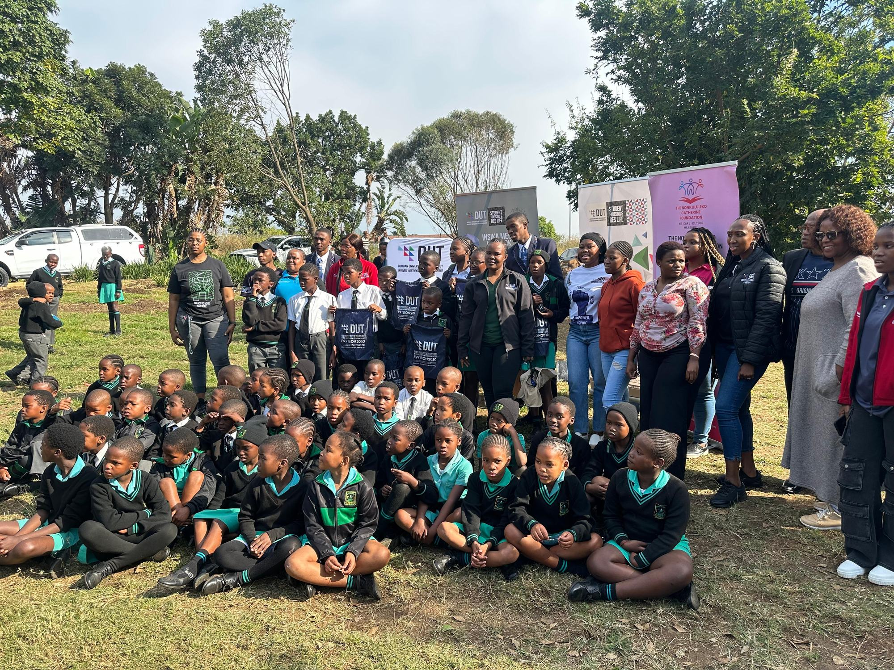
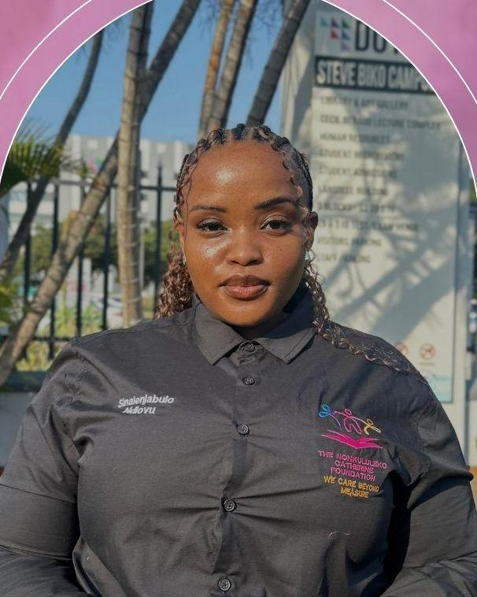

A name, a promise, a foundation.
A registered non-profit in KwaZulu-Natal, mobilising young people and empowering communities.

Sinalenjabulo Joy Ndlovu.
Joy is a fourth-year Human Resource Management student at the Durban University of Technology and an HR professional devoted to people development, leadership and positive workplace cultures.
A woman of faith and a pioneer for change, she started the foundation to create meaningful opportunities for the next generation. Today it runs four programmes, from school outreach and university applications to food parcels, the NCF Clothing Drive and comfort boxes for young women on campus.
“The idea and the vision became a reality. Then the hard work began, and a foundation was laid.”
One mission. One vision.
To empower and uplift communities, especially teenagers, by providing access to essential resources, fostering sustainable development and promoting social equality. We address real needs and foster a sense of belonging and empowerment, working with community members, high schools, churches and organisations.
A world where every individual has equal access to quality education, empowering them to reach their full potential and contribute to a more equitable society.
We operate with transparency and accountability, so every resource and every donation is used efficiently and effectively.
A five-step path to impact.
The same transparent process sits behind every parcel, box and school visit.
Listen
A school, church or community tells us what's needed.
Partner
We bring in local partners and set a clear goal.
Collect
Donations and sponsorships are gathered and sorted.
Deliver
Our team hands everything over in person, with dignity.
Report back
We share what was given and where it went.
Join the next drive.
Give items, sponsor a comfort box, or bring your school or organisation along.